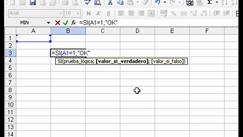

¿Que es un condicional
en excel?
¿Que es?
Los condicionales son el uso de funciones preestablecidas y el uso de restricciones para que estas operen. Los condicionales se pueden utilizar para modificar el comportamiento de todas las funciones que utiliza excel
